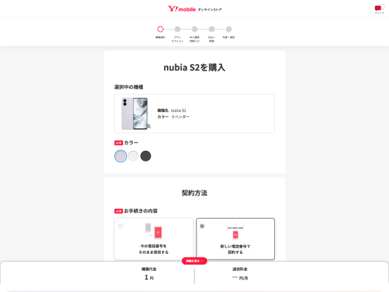
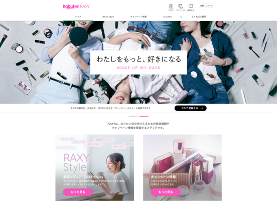
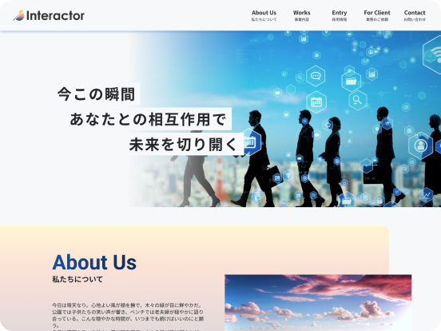
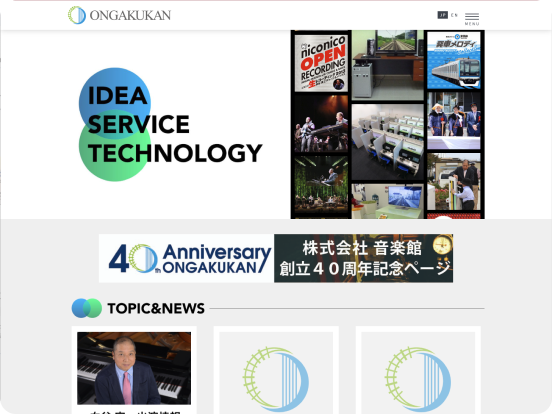
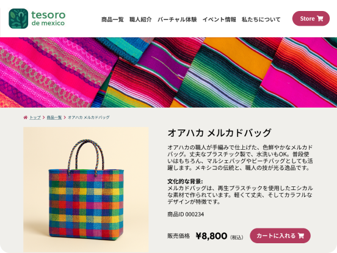

Commerce Platform
ワイモバイルオンラインストア
UI DesignDesign SystemDesignOps
オンラインストアの契約フローを中心に、新規デザインシステムの構築とUI改善を担当。運用基盤を整備し、一貫性のあるユーザー体験の実現に取り組んでいます。
Building a Design System for a Commerce Platform
UI/UX Designer & Web Engineer
人間中心設計（HCD）の考え方を軸に、
UI/UX設計やWebディレクション、デザインシステムの構築に取り組んできました。
営業やマーケティングの経験も生かしながら、人・事業・技術をつなぐプロダクトづくりを目指しています。

Tsujita Nozomi
HCD Specialist
Master's Student Technology
Management (MOT) at JAIST
Approach
調査・分析
ユーザーリサーチとデータ分析に基づき、課題の本質を特定。仮説を立て、検証可能な形に落とし込みます。
設計・実装
デザインから実装まで一貫して担当。プロトタイプを素早く形にし、フィードバックループを回します。
検証・改善
ユーザビリティテストと定量データで効果を検証。継続的な改善により、成果を最大化します。
Works

Commerce Platform
オンラインストアの契約フローを中心に、新規デザインシステムの構築とUI改善を担当。運用基盤を整備し、一貫性のあるユーザー体験の実現に取り組んでいます。
Building a Design System for a Commerce Platform

Product Website
サービスサイトの全面リニューアルに伴い、情報設計、ワイヤーフレーム作成、スタイルガイドの策定を担当。ブランド体験と使いやすさの両立を目指しました。
Released in 2024 • Full Site Redesign

Corporate Website
既存のブランド理念を継承したリデザインと実装を主導。プランニングからデザインおよびコーディング、WordPressの構築まで一貫して請け負いました。
2025 Renewal & New Brand Identity

Corporate Website
企業ブランドを伝えるコーポレートサイトの改善を担当。ワイヤーフレームの設計を軸に、デザインディレクション、表示速度の改善、SEO対策を通じてユーザー体験の向上に取り組みました。
Building a Better Corporate Experience

Conceptual Design Mockup
メキシコの伝統工芸と地域文化を支援するサービスを企画・設計。バーチャル工房体験や生産者との直接取引を通じて、文化継承と持続可能な地域経済の実現を目指しました。
Connecting Culture Through Digital Experience
Credentials
2024 - Present
北陸先端科学技術大学院大学 博士前期課程（技術経営プログラム）
HCD・AI・XR・3D都市モデルを活用した地方創生とビジネスモデルの研究
2024 - Present
IT・通信キャリア / Product Designer・UX Strategist
大規模EC・ネイティブアプリのUI/UXデザイン、HTML/CSSによるフロントエンド実装、組織横断デザインシステムの構築・合意形成、Webディレクション
2022 - 2023
大手ECサービス / UXチーム ディレクター
キャンペーンLPリニューアルでクリック数230%増、メルマガ改善で開封率・CTRを倍増、Asana導入で月10人日の工数削減、Style Guideの構築
2020 - 2021
鉄道シミュレータ製造業 / 営業・Webディレクション・UI設計
数百万〜数億円規模の案件推進、コーポレートサイト改修でUUを約5倍に拡大、コンシューマ向けソフトの画面遷移設計
2018 - 2020
入力デバイス スタートアップベンチャー / アカウントマネージャー
営業部門の立ち上げ、新規代理店12社・ECサイト22店舗への販路拡大、販促企画とWebマーケティングを単独で推進
2010 - 2018
通信キャリア / 代理店営業・SV・研修担当
店頭スタッフのマネジメント、店頭イベントの企画・運営、営業研修（累計200名以上）を担当
Design
Development
Research
Certifications